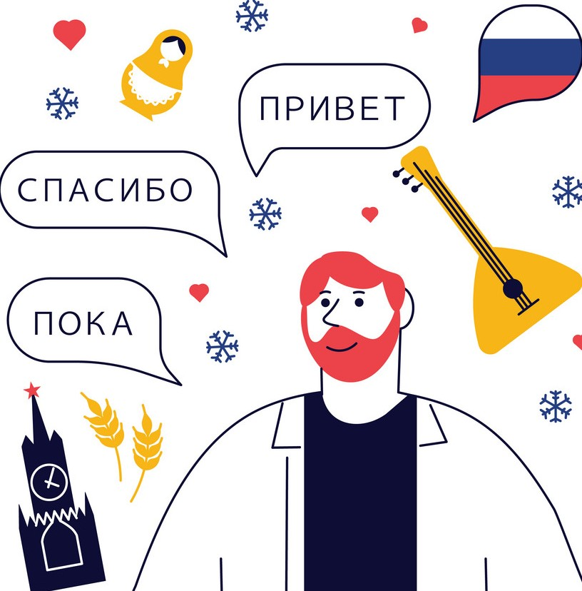

Visit Russia
Russian is the language enshrined in the Constitution of Russia as the nation’s national language. Russian is also one of the most widespread languages in the world, with speakers in Russia, Ukraine, Kazakhstan, Kyrgyzstan, Ukraine, Latvia, Moldova, Estonia, Georgia Tajikistan, Lithuania, Azerbaijan, Uzbekistan, and Belarus. The Russian language is also used as an official language in the United Nations, and also a primary language used by internet users around the world. The Russian language in its written form uses its distinct alphabet with additional consonants and vowels, which are based on the Cyrillic script. The global population of Russian native speakers is estimated to be 260 million people, with the majority residing in the former Russian Federation. The Russian language is classified as an Indo-European language and is one of the four East Slavic languages.
Besides Russian, there are other numerous languages which have been adopted as the official languages in Russia. These languages include; Ossetic, Ukrainian, Buryat, Kalmyk, Chechen, Ingush, Abaza, Adyghe, Cherkess, Kabardian, Altai, Bashkir, Chuvash, Crimean Tatar, Karachay-Balkar, Khakas, Nogai, Tatar, Tuvan, Yakut, Erzya, Komi, Hill Mari, Meadow Mari, Moksha, and Udmurt. These languages have thousands of native speakers who make up a significant percentage of the total Russian population.